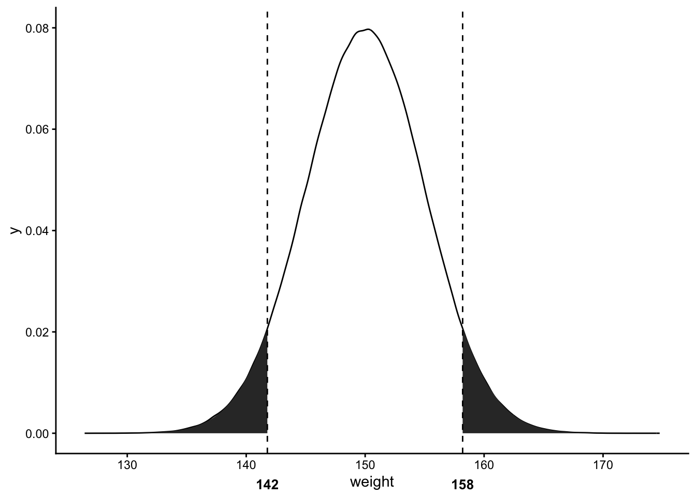

P-value
We use p-values a lot in our daily lives. However, if someone asks you what it really means you will probably have a hard time explaining. We will go through what exactly a p-value is with a concrete example one by one.
The definition of a p-value can be divided into three parts assuming the null hypothesis is true:
- The probability that random chance generated the data
- OR something else that is equal
- OR rarer
Let’s go through an example. We will use a randomly generated data from a normal distribution with mean = 180 and standard deviation = 10. Assume that the data is the weights of 1 million subjects of an experiment in pounds. What is the p-value for a subject who is 142 lbs
library(dplyr)
library(ggplot2)
m <- 150
std <- 5
df <- data.frame(weight = rnorm(n = 1000000, mean = m, sd = std))
cutoff1 <- quantile(df$weight, .05)
cutoff2 <- quantile(df$weight, .95)
ggplot(df, aes(x = weight)) +
geom_density() +
stat_function(fun = dnorm, args = list(mean = m, sd = std), xlim = c(min(df$weight), cutoff1), geom = "area") +
stat_function(fun = dnorm, args = list(mean = m, sd = std), xlim = c(cutoff2, max(df$weight)), geom = "area") +
theme_classic() +
geom_vline(xintercept = cutoff1, linetype= "dashed") +
geom_vline(xintercept = cutoff2, linetype= "dashed") +
annotate("text", x = cutoff1, y = -.01, label = as.character(round(cutoff1)), size = 3.5, fontface = "bold") +
annotate("text", x = cutoff2, y = -.01, label = as.character(round(cutoff2)), size = 3.5, fontface = "bold") +
coord_cartesian(ylim = c(0, .08), clip = "off") 
To compute p-values for a continuous outcome, you need to sum the percentages of area under the curve. Since 142 lbs is 0.05 quantile, the left shaded region’s area under the curve accounts for 5%. We add this area that is smaller or less than 142 which is the first half of the “equal or rarer” part. Now we look at the other “equal or rarer”. Since .95 quantile of our weight distribution is at 158 lbs, we add the right shaded area that is greater or equal than 158. Thus, the p-value for someone weighing 142 lbs is .05 + .05 = 0.1.
As you can see, the closer the p-value is to zero, the area under the curve gets smaller which means under the null hypothesis, the desired outcome will become rarer to observe. In terms of hypothesis testing comparing two treatments A and B, the smaller the p-value, the more confident that A and B are different. But how small should the p-value be? Rule of thumb is 5% which means if there was no difference detected between A and B, and if we did the same experiment multiple times, then only 5% of the experiments will result in the wrong direction due to random causes. Equivalently, we are willing to get a 5% false positive.
Lastly, p-values do not tell the effect size or how different the groups are.